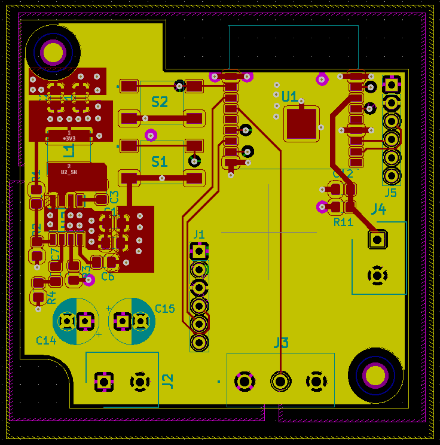
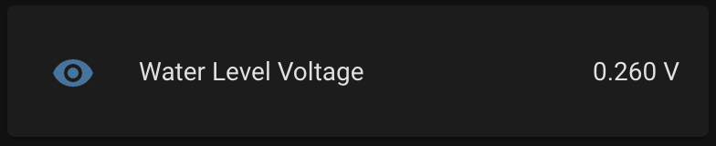
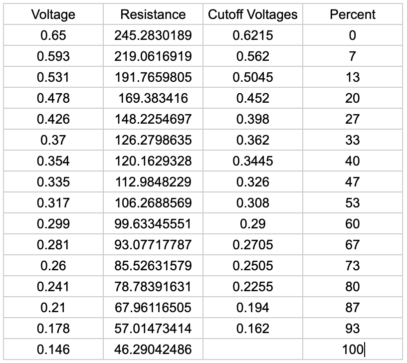
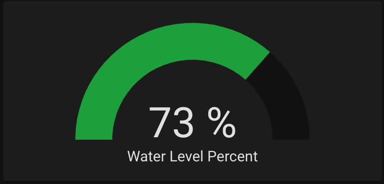

The next thing in my van that I wanted to monitor was the amount of water in my freshwater tank.
Previously I would have to peek through a little door on the side of my cabinet and make a rough estimate, so
being able to quickly pull out my phone and check was a huge improvement.
Items needed to set this up:
- Water Tank: I have this 20 gallon tank in my van. Any water tank with a flat top should work, but tanks that are too short could have less accurate results
- KUS Water Level Sensor: I used this 15" sensor for this project. For plastic tanks they recommend using a sensor 1" shorter than the height of your tank
- Water Sensor Flange: This is needed to mount the water sensor to the tank
- 40mm Hole Saw: To cut a hole in the top of the water tank
- ADC Electronics: I designed a custom PCB using an ESP8266, but other options can be used. See below for details
For this project we will be cutting a hole in the top of the water tank, so be very careful or you could
ruin your tank.
Start by draining the water tank. Drilling the holes in the tank tends to leave plastic residue inside,
so it'll be easier to clean up if the tank is empty.
Choose the location on the water tank where you will drill your hole in the top of the tank. The closer
to the center of the tank, the less your readings will be affected by parking on a hill.
Start by drilling the 40mm hole in the tank. Once this hole is complete, we then need to drill the 5
screw holes around it. You can use the flange or the sensor as a template to mark the location of the holes. Make
sure it is completely centered. Drill out these 5 holes just big enough for the screws to fit through (I forget
the exact drill size I used here, but I started small and gradually increased the size until the screws fit). Take
note of the orientation you use here since the drill pattern is not symmetrical. With the holes drilled, you'll
now want to vacuum out any of the plastic debris from inside the tank.
Next we will install the sensor using the flange. The flange goes inside the tank and the gasket and
sensor go on top with the screws clamping it together. The flange is c-shaped which allows it to fit through the
40mm hole. Be very careful not to drop it inside the tank. I bought longer 3" screws with the same thread as the
flange to make this process easier. By threading these longer screws, I could hold the flange in place while
lining up the sensor and starting some of the shorter screws. Once two screws are in place, it should stay lined
up and the remaining 3 should be easier. Tighten everything down to create a good seal with the gasket and
you're good to go!
Next we need to connect this sensor into Home Assistant. This water level sensor essentially acts as a
variable resistor that varies from 33Ω at full and 240Ω at empty. In order to read this resistance we will use a
voltage divider to convert the resistance to a voltage which can be read by an ADC (analog to digital
converter). Here is the circuit I used:
Connector J4 connects to the water level sensor, and the water voltage signal goes to the ADC. The
water level sensor should be able to be connected in either direction since it's just a resistor, but one of the
wires was black so I connected that one to GND. The capacitor was added to help reduce any noise. The ADC I'm
using has a max voltage of 1V. By choosing a resistor value of 1k, this should in theory create a voltage range
from 0.105V to 0.639V.
Unfortunately the Raspberry Pi doesn't have an ADC built in, so an external one is required. I
originally used an ADS1115 which connected to the Raspberry Pi with i2c, but because my water tank was so far
away from the Raspberry Pi, I was having a lot of issues with noise. I instead decided to use an ESP8266 which
has an ADC built in and can communicate with the Raspberry Pi over Wifi.

For the ESP8266 I designed
a custom PCB. This PCB runs on the 12V which I already have wired all over my van, uses a 3.3V step down
buck converter to power the ESP8266, and has a connector for the water level sensor wires and the voltage
divider circuit described above. The board also has a few other features that I plan to use for future
projects, but can be ignored for now. All chosen components are also easily hand-solderable. The KICAD files
can be found here:

The easiest way to configure an ESP8266 or ESP32 device to work with Home Assistant is by using
ESPHome. ESPHome allows you to quickly and easily configure an ESP8266 or ESP32 for different functions and
allows you to apply future updates wirelessly. You can install ESPHome in docker using:
sudo docker pull esphome/esphome
sudo docker run -d --name="esphome " --net=host -p 6052:6052 -p 6123:6123 --privileged --restart always -v /home/pi/esphome:/config esphomt/esphome
sudo docker run -d --name="esphome " --net=host -p 6052:6052 -p 6123:6123 --privileged --restart always -v /home/pi/esphome:/config esphomt/esphome
I ran it in privileged mode so ESPHome would have access to the USB ports for initially programming
any ESP32 or ESP8266 devices. After it's running, you should be able to access it by going to http://192.168.0.101:6052/ in your web browser.
To create a new device, click the "plus" button in the bottom right corner. Enter a name, choose a
device type (Generic ESP8266 for my custom board), and enter your wifi details. I then added the following
code to the file:
sensor:
- platform: adc
pin: A0
name: "Water Level Voltage"
id: water_voltage
update_interval: 1s
accuracy_decimals: 3
- platform: adc
pin: A0
name: "Water Level Voltage"
id: water_voltage
update_interval: 1s
accuracy_decimals: 3
This code tells the ESP8266 to read the voltage on the ADC pin every 1 second. To initially program
the device, select the correct device in the upper right hand corner, then click "Upload". For my custom board
I use this USB dongle to initially program it:
With it programmed, I could now install it with the water sensor

To connect it to Home Assistant, open the webpage and go to Configurations -> Integrations and add
the ESPHome integration. Once added, the ESPHome integration should automatically detect any ESPHome devices
on your network. Add your water level sensor and you should now have access to the voltage readings.

Because I wasn't sure what voltages I'd see at different water levels, I kept logs of the voltage as my
water tank was emptied and then fully refilled. I then had a complete set of data and could assign percentage
values to different voltages.

I then added the following code to my ESPHome file and updated it to now send percent values in
addition to voltages:
- platform: template
name: "Water Level Percent"
unit_of_measurement: "%"
accuracy_decimals: 0
update_interval: 1s
lambda: |-
if (id(water_voltage).state < 0.162) {
return 100;
} else if (id(water_voltage).state < 0.194) {
return 93;
} else if (id(water_voltage).state < 0.2255) {
return 87;
} else if (id(water_voltage).state < 0.2505) {
return 80;
} else if (id(water_voltage).state < 0.2705) {
return 73;
} else if (id(water_voltage).state < 0.29) {
return 67;
} else if (id(water_voltage).state < 0.308) {
return 60;
} else if (id(water_voltage).state < 0.326) {
return 53;
} else if (id(water_voltage).state < 0.3445) {
return 47;
} else if (id(water_voltage).state < 0.362) {
return 40;
} else if (id(water_voltage).state < 0.398) {
return 33;
} else if (id(water_voltage).state < 0.452) {
return 27;
} else if (id(water_voltage).state < 0.5045) {
return 20;
} else if (id(water_voltage).state < 0.562) {
return 13;
} else if (id(water_voltage).state < 0.6215) {
return 7;
} else {
return 0;
}
name: "Water Level Percent"
unit_of_measurement: "%"
accuracy_decimals: 0
update_interval: 1s
lambda: |-
if (id(water_voltage).state < 0.162) {
return 100;
} else if (id(water_voltage).state < 0.194) {
return 93;
} else if (id(water_voltage).state < 0.2255) {
return 87;
} else if (id(water_voltage).state < 0.2505) {
return 80;
} else if (id(water_voltage).state < 0.2705) {
return 73;
} else if (id(water_voltage).state < 0.29) {
return 67;
} else if (id(water_voltage).state < 0.308) {
return 60;
} else if (id(water_voltage).state < 0.326) {
return 53;
} else if (id(water_voltage).state < 0.3445) {
return 47;
} else if (id(water_voltage).state < 0.362) {
return 40;
} else if (id(water_voltage).state < 0.398) {
return 33;
} else if (id(water_voltage).state < 0.452) {
return 27;
} else if (id(water_voltage).state < 0.5045) {
return 20;
} else if (id(water_voltage).state < 0.562) {
return 13;
} else if (id(water_voltage).state < 0.6215) {
return 7;
} else {
return 0;
}
Success! I now have a fully functional water level sensor integrated with Home Assistant.
